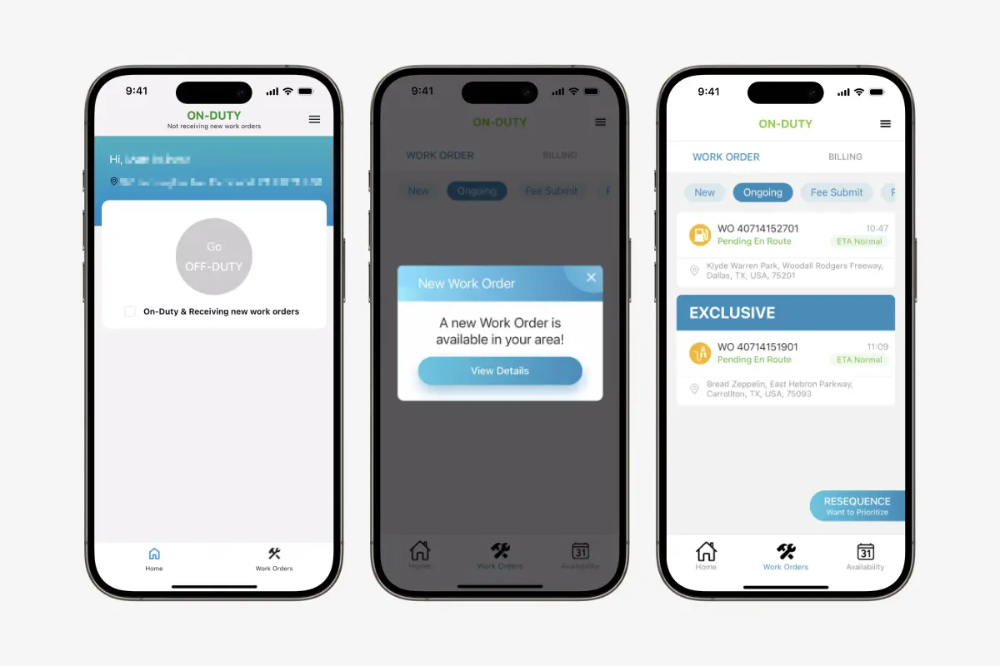
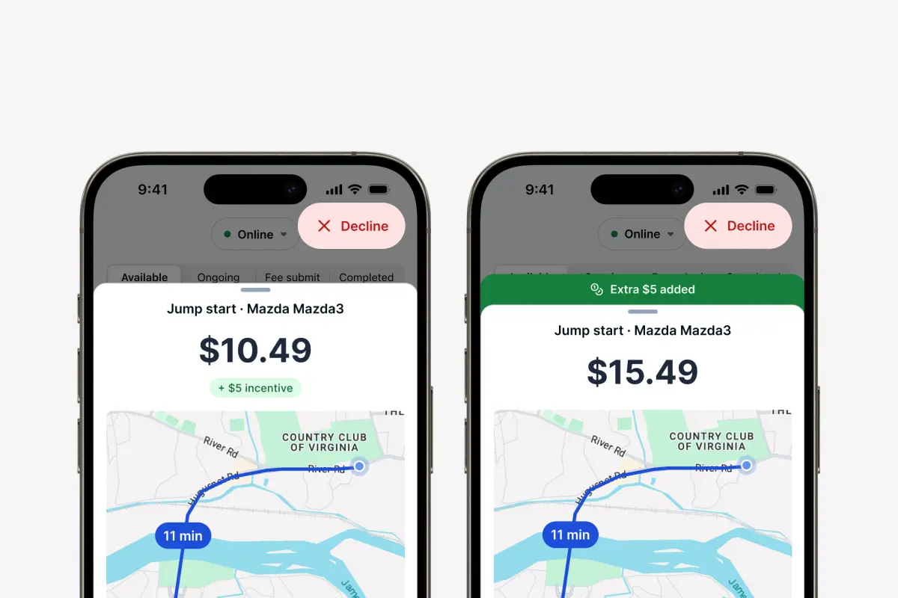

Curbside SOS
Redesigned the job offer experience for roadside technicians, increasing automated acceptance from 54% to 93% while restoring trust in the platform.
Problem
Curbside SOS is a roadside assistance startup operating nationwide. Unlike traditional services that rely on employed technicians, we built a multi-sided marketplace connecting independent contractors with stranded motorists. Like Grubhub drivers, these technicians have little loyalty to a specific platform and will contract with a number of companies to find the best jobs—balancing pay against time and effort. Our network is made up of everyday people earning flexible income, driving their own vehicles to handle light-duty work like jump starts, fuel delivery, battery replacement. They use a mobile app to see incoming rescue requests, navigate to motorists, document the rescue, and track their earnings.
We inherited this technician app from an acquisition. It was falling apart. The App Store reviews illuminate the state it was in:
- "Absolutely not ready. You guys have to work on this app to make it easier for the technician."
- "App constantly crashes"
- "Don't waste your time with this company"

Beyond the crashes and bugs, the app eroded trust with every interaction. Technicians couldn't rely on notifications, couldn't quickly evaluate whether a job was worth their time, and questioned whether they'd even get paid correctly. Our network was frustrated and had little loyalty to our platform.
The most pressing business issue: only 54% of rescue offers were automatically accepted. Nearly half of all jobs required manual dispatcher intervention—an expensive process where dispatchers had to sweeten deals with bonuses just to get technicians to accept. This meant: higher costs eating into margins, longer wait times for stranded motorists, frustrated technicians, and overworked dispatchers.
Technicians were paid a flat base rate per job, which incentivized cherry-picking easy, nearby rescues and rejecting anything farther or more complex. The app gave them almost no information upfront to make informed decisions, just a generic modal saying "A new work order is available in your area!" with a button to view details buried behind additional taps.
If we implemented dynamic pricing that accounts for distance and complexity, and surfaced that pricing alongside critical job details upfront, technicians could quickly evaluate offers and accept more jobs, especially ones they previously would have rejected.
But the pricing logic alone wouldn't be enough. We needed an app experience that technicians could actually trust and use efficiently. A rebuild was inevitable, and we saw an opportunity to redesign key workflows from the ground up.
Research & Exploration
I conducted interviews with technicians in our network to understand their thought process when evaluating rescue offers. I showed them prototypes of the rescue offer modal at different states and asked what mattered most when deciding whether to accept or reject it.
I learned technicians needed different information at different stages of a rescue:
Before accepting: Most importantly, they want to know where the rescue is. Is it in a dangerous location? Is it in the opposite direction of where I want to end up for the day? In the current paradigm where they already know their base rate, they want to do a quick mental calculation to determine if it is worth their time to drive to the motorist. However, it was agreed that if earnings are dynamic, then it is critical to show that upfront. They also are interested in the vehicle and job type because certain car and job combinations, interestingly, were deal-breakers.
After accepting, en route: Once accepted, earnings became less important. What matters is navigating to the scene and within the time window that the motorist was told. An unexpected finding was that technicians want navigation to the reported GPS coordinates rather than a reverse-geocoded address, since a stranded motorist on a highway might be shown at a nearby business address instead of their actual roadside location.
On the scene: At this point, information density is less important since they are focused on the motorist. They need a CTA to add photos of the vehicle and, in the case of issues finding the motorist among other things, they need the work order number readily available when contacting support.
Another important question was: how might we surface rescue offers with bonus incentives clearly?
Before, any bonus incentives (like holiday pay or off-peak multipliers) were communicated via text or email separately. Technicians had to mentally calculate their total earnings by remembering their base rate and adding any active bonuses. This disjointed experience increased cognitive load or would be forgotten altogether.
I explored two approaches: either show the dynamic price large with the incentive bonus displayed separately nearby, or show the total price prominently with a callout explaining the bonus was added.
We chose the latter so technicians wouldn't have to do mental math or wonder if the bonus was already included. Clarity around that earning amount was so important since that was the technician's primary motivator.

The legacy app used local notifications that only worked when the app was open, and the messaging was vague—"A new work order is available in your area!" I redesigned these as push notifications that would reliably reach technicians even when the app was backgrounded, and included the most critical details upfront: distance, rescue type, and offer value. I also worked with a musician to compose new notification sounds for different types of offers, helping to distinguish them from other apps while the technician may be on the road.
Solution
While we planned a comprehensive app redesign with a new design system and improved workflows throughout, we prioritized the offer modal as the highest-impact intervention to address the 54% auto-match problem.
The main addition was a new bottom sheet modal that automatically appeared when a rescue offer came in. This replaced the old flow where technicians had to: (1) tap to close a generic "new work order available" modal, (2) tap again to open a detail view, and (3) finally tap to accept or reject.
Now, a single tap to accept from the modal that already contained everything they needed to decide.
Technicians needed to make split-second decisions, often while driving or juggling multiple apps. Every design choice prioritized surfacing the right information at the right time with minimal interaction. The goal wasn't just to simplify the app, but to lift up what mattered most and make the experience feel familiar to anyone who'd used other gig-work apps.
We hoped a secondary benefit would emerge if we nailed the redesign: trust. An app that actually worked reliably and respected technicians' time could rebuild the relationship our legacy product had eroded.
What we surfaced
- Total earnings prominently displayed with a clear callout if bonus incentives were included (e.g., "+$8 holiday bonus"), eliminating mental math and building transparency
- Vehicle type and rescue type so technicians could immediately identify difficult job combinations
- Distance from their current location in both mileage and drive time accounting for traffic to help them evaluate time investment
- Direct GPS coordinates instead of reverse-geocoded addresses for accurate navigation
Visual improvements for glanceability
- Better text hierarchy with a more intentional type scale
- Higher contrast color palette meeting AA accessibility standards
- Push notifications that worked even when the app was closed, with descriptive copy showing distance, rescue type, and value upfront
Results
In our largest market, the automated dispatch rate jumped from 54% to 93% after launching the redesigned offer modal. Nearly every rescue offer was now being accepted without manual dispatcher intervention.
This was more than better UX—it was a combination of an improved backend matching algorithm and surfacing the right information at the right moment. Neither could have succeeded without the other.
Due to resource constraints and a desire to get the highest-impact changes to technicians faster, we launched the new offer modal over the existing legacy app as Phase 1. The broader React Native rebuild and design system work was planned for Phase 2. That 93% acceptance rate came from this focused intervention, proving that the offer modal was the critical unlock.
Technician feedback
"The new system is 1000 times better than the previous system. Now when I see a job pop up, I know exactly what I'm gonna be paid for the job and because of the adjustable scale I'm actually eager to grab as many jobs as I can. To be honest, the old app was so bad that I was aggressively looking for ways to not use [Curbside SOS] and to not accept jobs. Now I'm not frustrated when I see the jobs pop up and I'm eager to accept them."
"I like being able to see exactly what I'm getting paid for the job and what the job entails and being able to see the exact location of the job which I couldn't see before or at least I would've had to look at multiple screens to see all that information."
"I can tell you with 100% certainty that about 60 to 70% of the jobs that I took over the last couple of days I would not have taken under the old app and the old process."
"I'm actually so happy with the new app that I really find it difficult to complain about any of the very small issues that seem to be present. Because the pay seems fair and the communication is clear. I'm much more willing to take every job that I can."
"I was just telling my wife this morning that I couldn't imagine that the company would have problems finding drivers who want to work now that they've improved the app. The old app and process were so frustrating that we lost people because of it. I know, for example, a friend of mine got hired and quit within two weeks because of his frustrations with the app and the process."